設計規範對施工之要求
第 1 章一條主軸
設計規範對施工的要求，這個單元最怕死背條文。它其實只有一條主軸：設計假設，對上施工實況。
| 設計端：理想的鋼 | 工地端：真的做出來的鋼 |
|---|---|
| 均質、無缺陷 \(F_y\) 為定值 斷面永遠連續 韌性充足 | HAZ 晶粒粗大 氫致冷裂 殘留應力 油污、腐蝕 |
前面四個單元算的是理想的鋼；但工地做出來的鋼，有熱影響區、氫致冷裂、殘留應力，還有油污和腐蝕。所以每一條施工規範都在回答同一個問題：
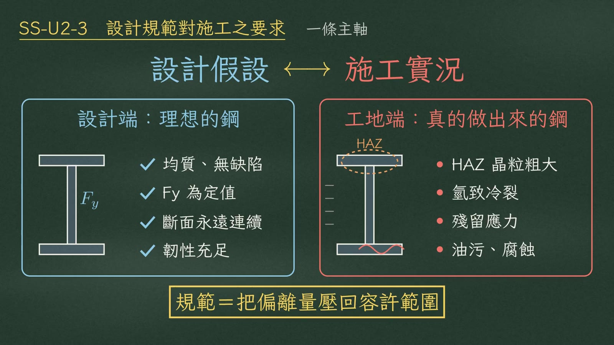
第 2 章三道防線
手段只有三種，就是三道防線。
| 防線 | 管什麼 | 項目 |
|---|---|---|
| ① 事前 | 管輸入 | 母材等級（SN-B／SN-C）、碳當量 CE、低氫銲條烘乾、銲接程序書 WPS 和銲工資格 |
| ② 事中 | 管過程 | 預熱和層間溫度、銲腳尺寸（\(w_{min}\)～\(w_{max}\)）、回銲（\(2w\)～\(4w\)）、不准塗裝的部位（摩阻面、銲道旁） |
| ③ 事後 | 管驗收 | VT 目視；MT、PT 查表面；UT、RT 查內部（CJP：100% UT） |
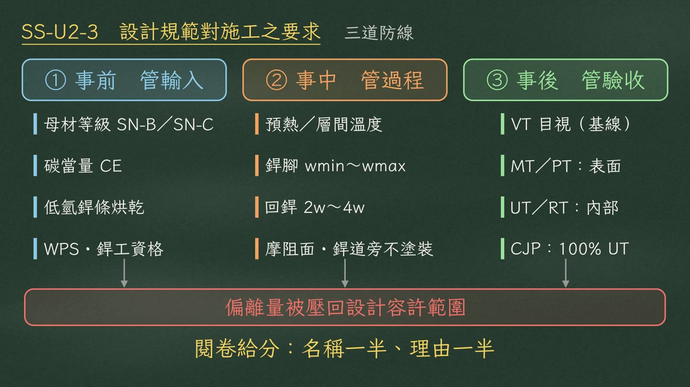
第 3 章填角銲強度
唯一要代的公式是填角銲強度：
$$\phi R_n = 0.75 \times 0.6F_{EXX} \times (0.707w) \times L$$兩個常數都不用背：
0.707：幾何常數
等腳填角銲斷面是等腰直角三角形，最短的破壞面是銲喉：
$$t_e = w\sin 45^\circ = \frac{w}{\sqrt2} = 0.707\,w$$0.6：von Mises 準則
純剪降伏等於 \(F_y/\sqrt3\)：
$$\tau_y = \frac{F_y}{\sqrt3} = 0.577F_y \;\rightarrow\; 0.6F_y$$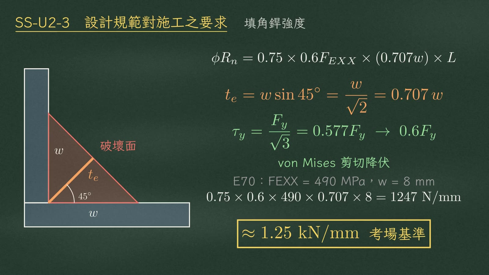
代入 E70 銲條（\(F_{EXX}=490\) MPa）、銲腳 8 mm：
$$0.75\times0.6\times490\times0.707\times8 = 1247\ \text{N/mm} \approx 1.25\ \text{kN/mm}$$第 4 章機制一：熱影響區 HAZ
接下來六條物理機制。第一，熱影響區 HAZ。銲接是局部熔化再急速抽冷，銲道旁沒熔化、卻被熱改變組織的那一圈，就是熱影響區。最靠近熔合線的過熱區晶粒粗大、韌性最低，破壞幾乎都從這裡起裂。
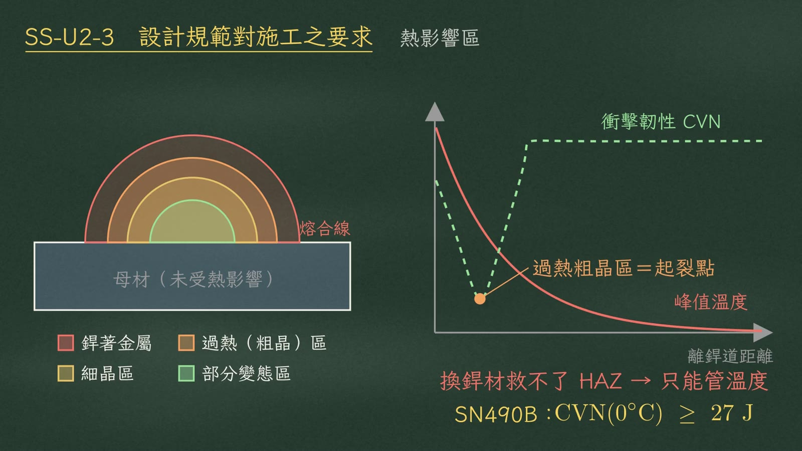
第 5 章機制二：氫致冷裂
第二，氫致冷裂，是延遲裂縫，常在銲完數小時到數天後才出現。它要三要素同時成立，三者缺一不可：
| 要素 | 來源 | 預熱如何打掉 |
|---|---|---|
| 氫源 | 濕氣、油污、鏽 | 延長高溫時間，讓氫逸出 |
| 高拉應力 | 殘留應力和拘束 | 縮小溫度梯度，降低拘束 |
| 敏感組織 | 碳當量高、急冷生成麻田散鐵 | 降低冷卻速率，少生麻田散鐵 |
預熱是最划算的對策，因為一招打掉三個要素。預熱溫度看較厚的板：
| 較厚板厚 \(t\)（mm） | \(\le 19\) | 19～38 | 38～65 | \(>65\) |
|---|---|---|---|---|
| 預熱溫度 | 10°C | 65°C | 110°C | 150°C |
層間溫度不超過 350°C。
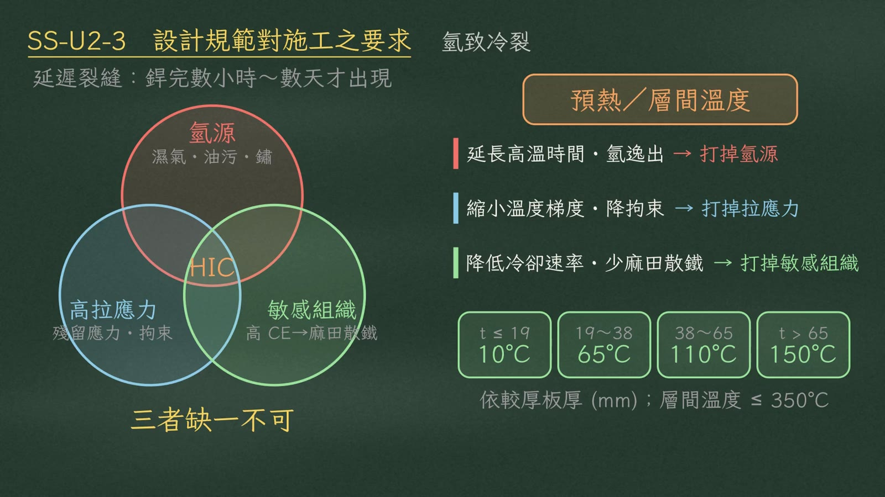
低氫銲條的雙溫陷阱
| 步驟 | 溫度 | 目的 |
|---|---|---|
| 烘乾 | 300～350°C | 趕走水分 |
| 保溫筒 | 100～150°C | 隨身攜帶，防止再吸濕 |
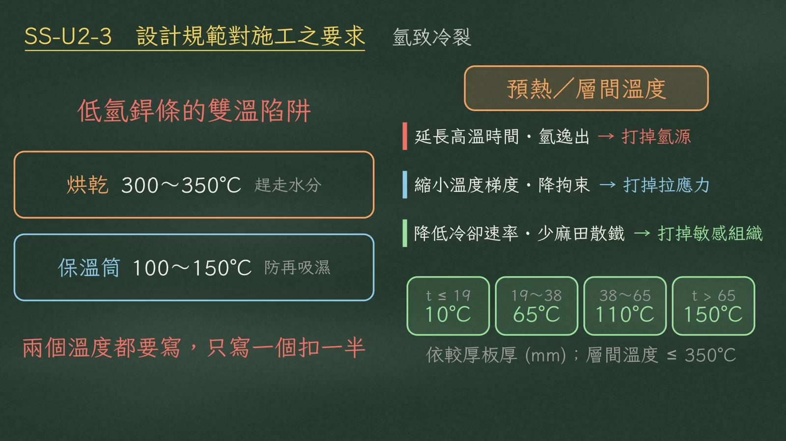
第 6 章機制三：層狀撕裂
第三，層狀撕裂。鋼板是軋出來的，夾雜物被壓成平行板面的弱面，所以板厚方向，也就是 Z 向最弱。T 型接頭的銲道收縮把板往 Z 向拉開，就沿著弱面撕成階梯狀。
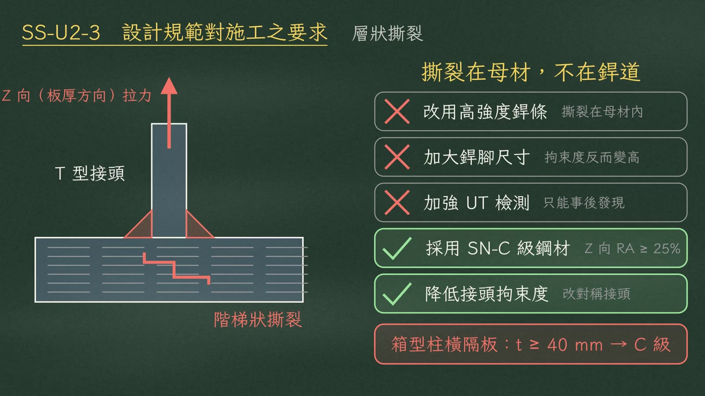
第 7 章機制四：銲腳與回銲
第四，銲腳的上下限，理由完全相反。
| 界限 | 怕什麼 | 規定 |
|---|---|---|
| 下限 \(w_{min}\) | 厚板像散熱片把熱抽走 → 急冷 → 冷裂 | 板愈厚，最小銲腳愈大 |
| 上限 \(w_{max}\) | 熔蝕板緣 | 板厚 6 mm 以上，\(w_{max} = t - 2\ \text{mm}\) |
例如板厚 12 mm，銲腳介於 5～10 mm：\(5 \le w \le 10\ \text{mm}\)。
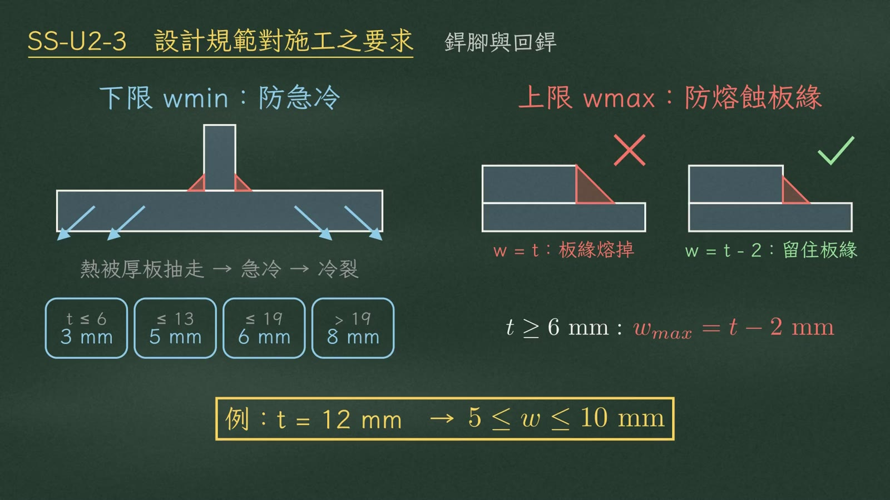
回銲是在端部轉角多銲一段，把應力尖峰和起弧缺陷移開：
$$2w \le \ell \le 4w \qquad (w = 8\ \text{mm} \rightarrow \ell = 16\text{～}32\ \text{mm})$$上下限都要寫。
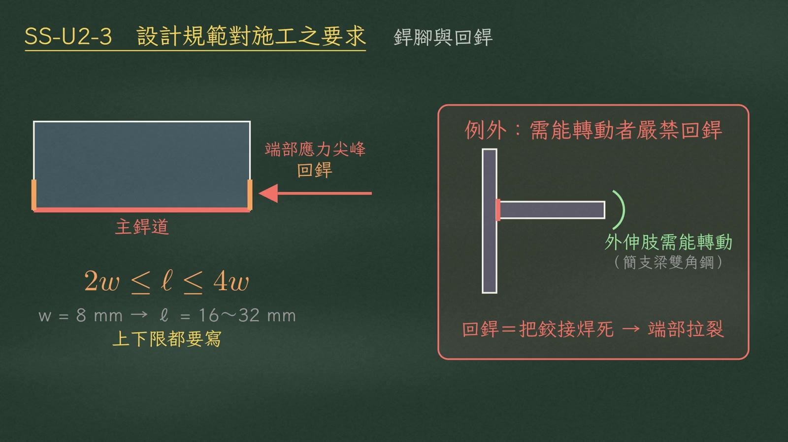
第 8 章機制五：非破壞檢測
第五，非破壞檢測不用背表，只問兩個問題：缺陷在表面還是內部？是扁的還是圓的？裂縫、未熔合是扁平的面積型；氣孔、夾渣是圓胖的體積型。
| 面積型（扁平） 裂縫・未熔合・未滲透 | 體積型（圓胖） 氣孔・夾渣 | |
|---|---|---|
| 表面 | MT 磁粉：靈敏度最高；不鏽鋼改用 PT | VT 目視：所有銲道的基線 |
| 內部 | UT 超音波 | RT 放射線 |
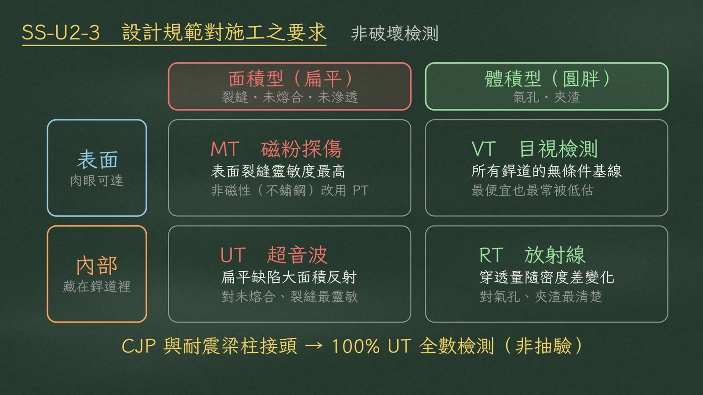
第 9 章機制六：高拉力螺栓
預拉力為什麼是 \(0.7F_uA_s\)
以 A325 M22 為例（\(A_s = 303\ \text{mm}^2\)）：
$$T_b = 0.7F_uA_s = 175\ \text{kN},\qquad F_yA_s = 200\ \text{kN},\qquad T_b \approx 0.88\,F_yA_s$$\(T_b\) 剛好踩在塑性平台上。多轉一點角度，軸力增加有限，不會拉斷，這就是轉角法成立的理由。
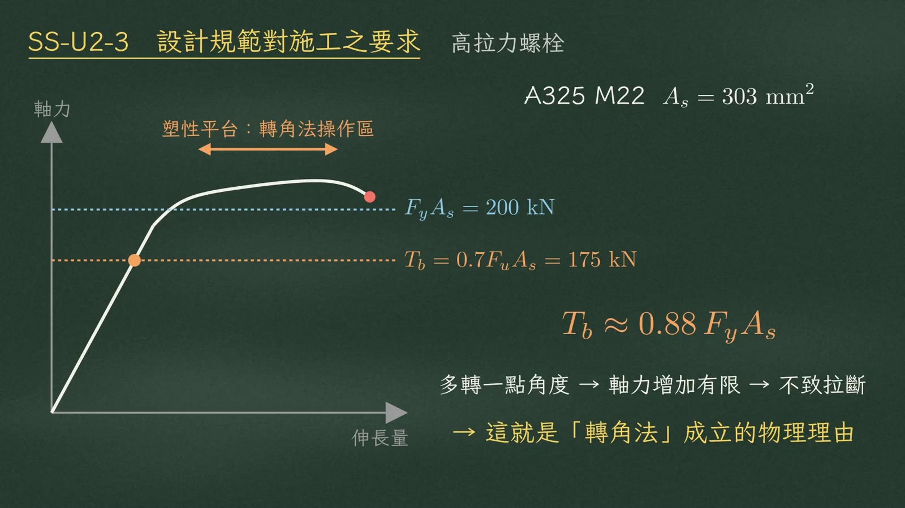
螺栓不能重複使用
第一次鎖固已產生永久塑性伸長；再用一次，扭矩係數 K 值失準，轉角法也沒有彈性段可走，可能直接拉斷。
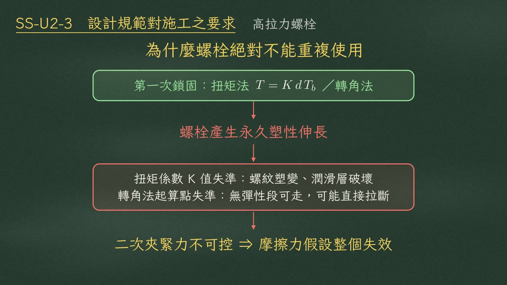
摩阻面
摩阻型強度直接正比於滑動係數 \(\mu\)：
$$\phi R_n = \phi\,\mu\,D_u\,h_{sc}\,T_b\,n_s \;\propto\; \mu$$| 摩阻面 | \(\mu\) | 單一螺栓 |
|---|---|---|
| 噴砂 Class B | 0.50 | 98.9 kN |
| 一般除銹 Class A | 0.33 | 65.3 kN |
| 塗了漆（禁用） | ≈ 0.15 | 29.7 kN（不到一半） |
黑板註：\(T_b = 175\) kN、\(D_u = 1.13\)、標準孔 \(h_{sc} = 1.0\)、單剪面、\(\phi = 1.0\)。
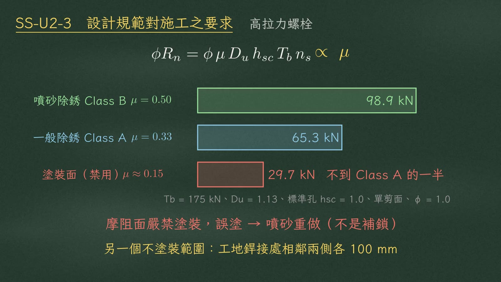
第 10 章防蝕
防蝕是拆掉一顆原電池。
| 方法 | 機制 | 膜破之後 |
|---|---|---|
| 油漆 | 純物理屏障 | 鏽往塗層下方鑽，保護歸零 |
| 熱浸鍍鋅 | 屏障＋犧牲陽極：鋅 −0.76 V 比鐵 −0.44 V 更負，鋅先溶解 | 就算劃傷，保護半徑內的鋼也不生鏽 |
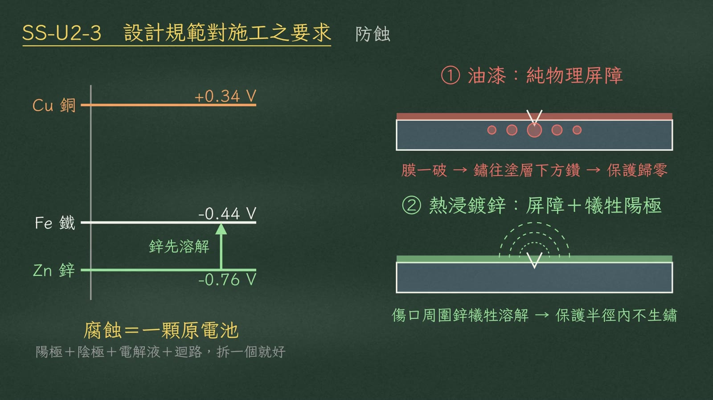
第 11 章耐震加嚴
節點域最小厚度
$$t_z \ge \frac{d_z + w_z}{90}$$90 是寬厚比門檻：節點域要靠剪力降伏耗能，太薄會先剪力挫屈，迴圈捏縮不耗能。例如：
$$\frac{583 + 379}{90} = 10.7\ \text{mm},\qquad t_w = 13\ \text{mm} > 10.7\ \ \text{OK}$$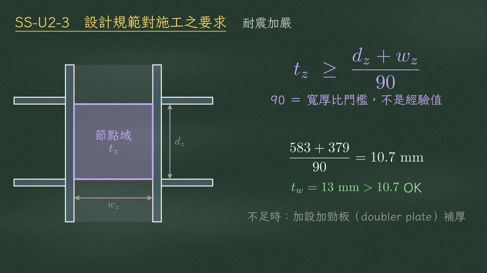
連強度上限都要管
最違反直覺的是：耐震構材連強度上限都要管。梁的實際 \(F_y\) 太高，梁不肯降伏，塑鉸被推到柱和接頭銲道，變成脆性破壞。
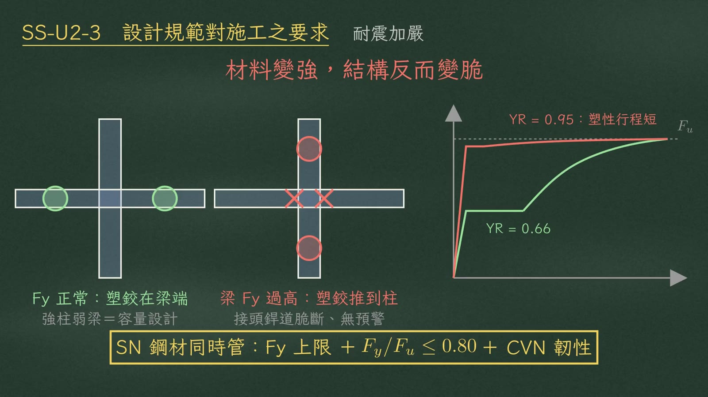
第 12 章總結
考場三步法
| 步驟 | 做什麼 |
|---|---|
| ① 審題 | 問「怎麼做」→ 套三道防線；問「為什麼不能」→ 指出被破壞的設計假設 |
| ② 帶入物理機制 | 見本講義第 4–11 章的六條機制 |
| ③ 檢查數字和上下限 | 雙溫、\(2w\)～\(4w\)、27 J、100 mm |
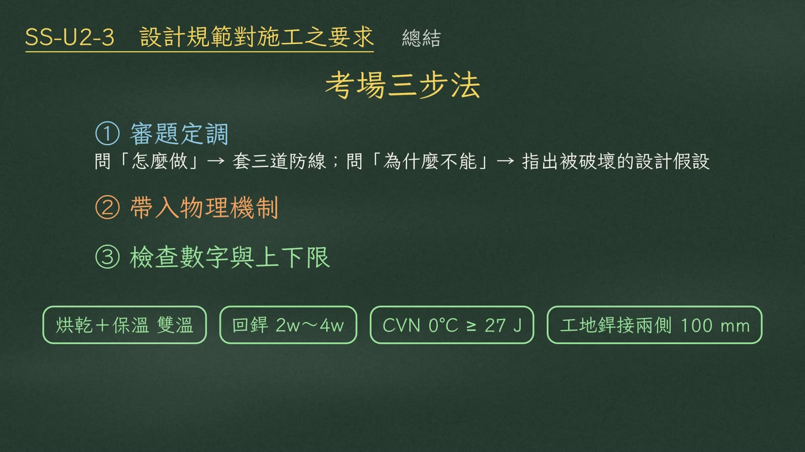
每寫一個做法，就寫出它擋掉哪一種偏離。
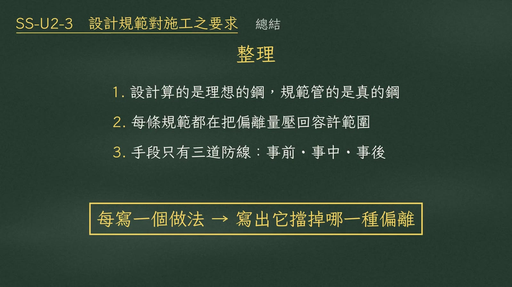